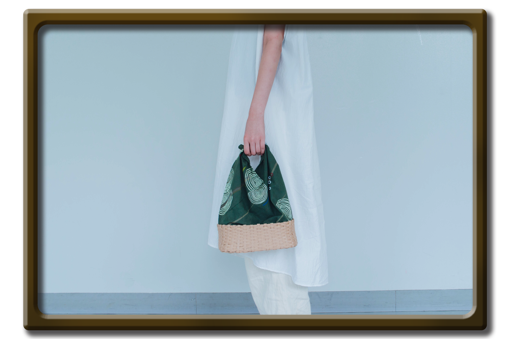
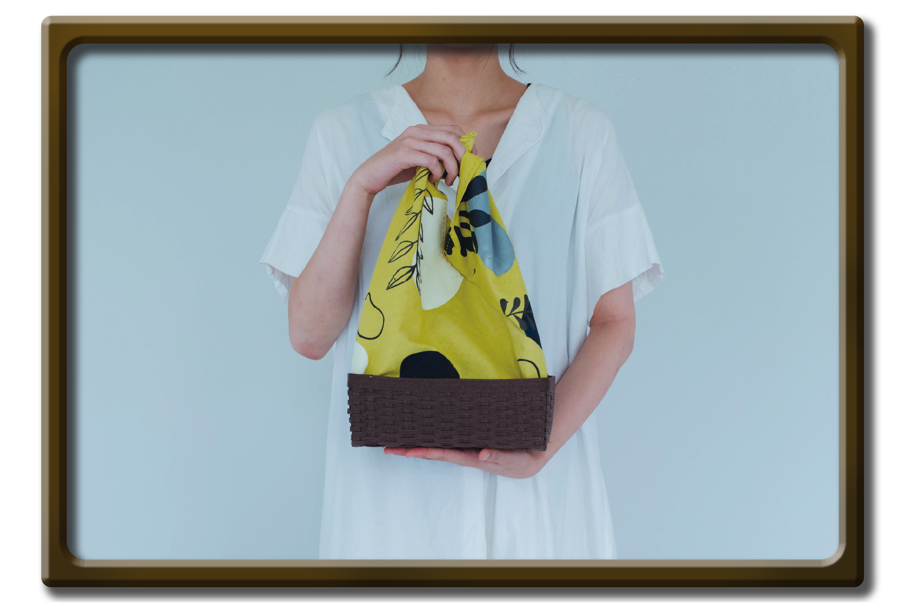
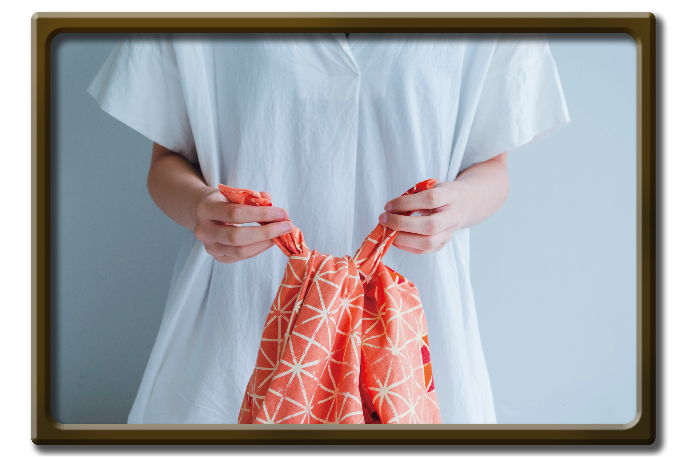

薫りと和みを持ち運ぶ
2020/7/2-2020/8/20
テキスタイル グッズ
日本にゆかりのある３つの薫りをモチーフに布の選定からデザイン、
染め、模様付け、籠の製作まで行った和風の籠バッグです。
Illustrator 染め シルクスクリーン

檜

竜涎香

金木犀

風呂敷時


布の染め、シルクスクリーンを行いました。深い色味を出すことにこだわり、 布が乾いてから色味が変化してしまうため何度も染め直しを繰り返しました。 本来単色で2〜30分ほどで染め終わるところ、濃い色を作ることが難しく、 この作品の染めには10時間ほどかかりました。
一枚の布を選定するところからデザイン、染め、シルクスクリーン、籠の製作、 色の組み合わせの施行などグッズが出来上がるまでの一連の流れを体験することができました。
‹ prev
next ›